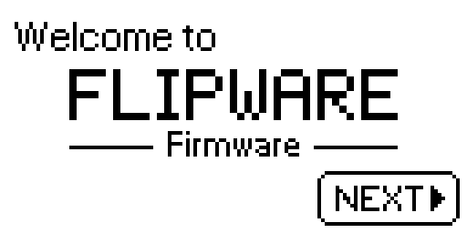
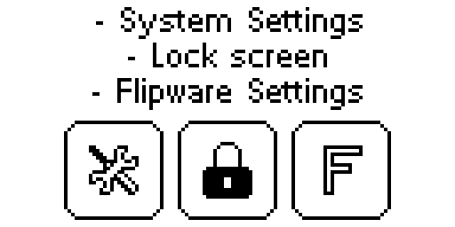
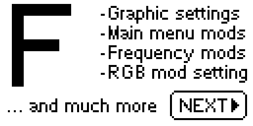

VGM desktop Preview
The Video Game Module shows a full desktop over HDMI: a live mirror of the Flipper screen, an SD card file browser and an app dock, driven by keyboard and mouse. It runs on Flipware's VGM firmware, which is not released yet.
Open-source custom firmware for Flipper Zero.
Everything Momentum offers, plus compute offload to the Video Game Module's RP2040, and a VGM desktop and USB display stream in preview.

The Video Game Module shows a full desktop over HDMI: a live mirror of the Flipper screen, an SD card file browser and an app dock, driven by keyboard and mouse. It runs on Flipware's VGM firmware, which is not released yet.
The same desktop streams out of the VGM's USB-C port, so a computer can be its screen and keyboard. Same preview VGM firmware as above; no computer-side viewer yet.
The Flipper hands compute jobs to the RP2040 over the expansion link, with DMA receive. Flipware's VGM firmware asks for 2,000,000 baud, the stock module for 1,843,200. It helps jobs with a small payload and a lot of compute, not per-byte work like CRC.
Asset packs, main menu and lock screen customisation, Bad KB and the extended Sub-GHz and NFC tools. Apps built for Momentum keep working.


Install the latest release, or build it yourself.
.tgz package from the
latest release..tgz and wait for the update to finish.Prefer the SD card? Extract the release .zip into SD/update,
then run Update from the Flipper's file browser.
Coming from Momentum, the official firmware or Unleashed? Your settings and saved files are kept. The install guide covers the details, checking the download and going back.
git clone --recursive --jobs 8 https://github.com/calvingunther66/Flipware.git
cd Flipware
./fbt flash_usb_full # flash over USB
./fbt updater_package # build a .tgz update packageFlipware is built on Momentum, Unleashed and the Official Firmware, and bundles apps by many authors. It is free software under the GNU GPL v3.0.